Overview
Civi believes safety is a right for everyone, and aligns information and technology to help individuals and communities stay better informed and safer.
Civi's goal is to become the number one security app in Latin America by empowering tens of millions of users to improve their personal security.
The company started focusing first on São Paulo, Brazil.
First wireframe (2020)
I made Civi's first wireframe, based on a sketch the founder made.
The goal was to build an MVP and launch fast.
That first version included a COVID-19 tracker, which was discontinued around 2021.
Interface overtime
Between April 2020 and September 2022, I took the app from MVP to a fully functional product — here are a few key moments from that evolution.
Main functionalities
Before I get into individual features, here's an overview of Civi's core experience — the map, search, saved places, contacts, and settings that made up what most users interacted with day to day.
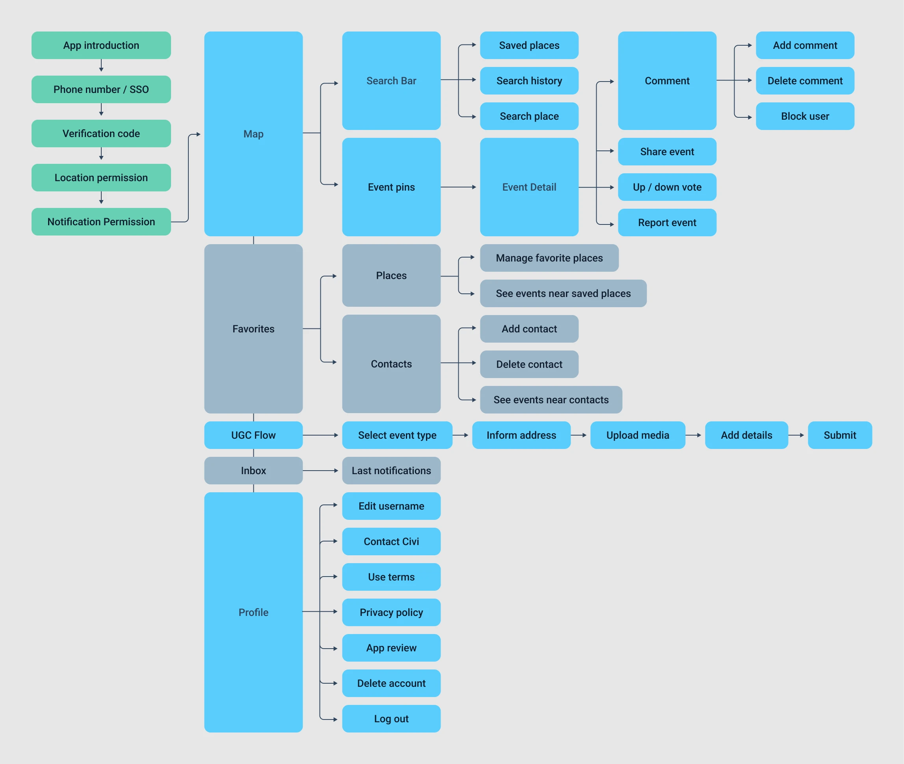
The diagram below maps the app's core flow - navigating the map, searching places, saving places, adding contacts and checking contacts.
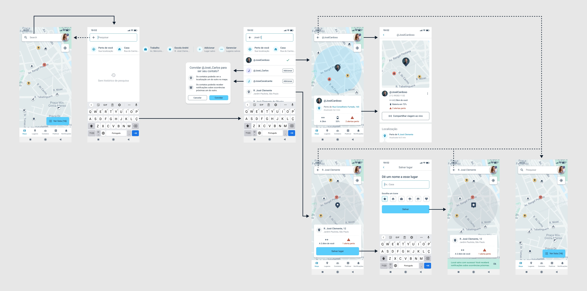
Design system (2021)
I created Civi's design system in the second half of 2021, together with another designer. The master components gave the app a consistent visual identity, sped up development, and made it easier to scale.
"Save places" discovery process (2021)
I built "Save Places" — one of the app's core features — based on user research and data analysis.
Planning research
Goal
My goal was to focus our efforts on the features that would make the app more useful and appealing to users.
I wanted to find out which event types were relevant enough to show on the map and/or trigger alert notifications.
Target group
These interviews focused on the app's most active users. I wanted to better understand the profile of people interested in our product — when they used the app, how often, and why.
Interview questions
- What do you do for a living?
- How did you find out about Civi?
- How has your experience with the product been so far?
- Has the app ever crashed for you?
- Do you feel safer with the app?
- Have you been receiving notifications from Civi?
- What event types do you think are relevant for you? Why?
- What event types do you think are irrelevant? Why?
- Is there any functionality you would like the app to have?
User interviews
I interviewed about 15 active users for around 10 minutes each, and documented each session's questions, replies, and key insights.
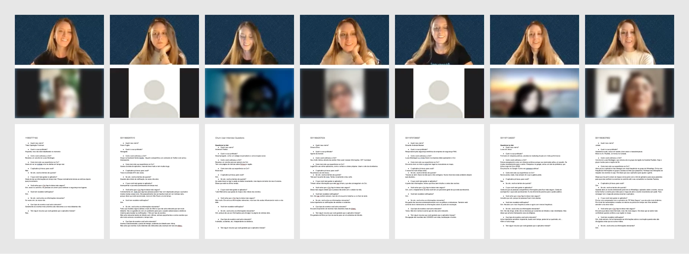
Data compilation
From the interview notes, I built a spreadsheet summarizing the key insights, feature suggestions, and relevant/irrelevant event types, then turned it into three charts to visualize the patterns.
Data analysis and conclusion
The interviews showed people cared about their loved ones' safety as much as their own — they wanted visibility into their homes, workplaces, and other frequented places, and a way to confirm that family and friends were safe.
Over 23% of interviewees also wanted to filter notifications by maximum distance or event type, frustrated by alerts that felt too far away or irrelevant.
Interactive prototype & user test
I built an interactive prototype to validate the feature with users, which let me apply improvements and fix issues before shipping to production.
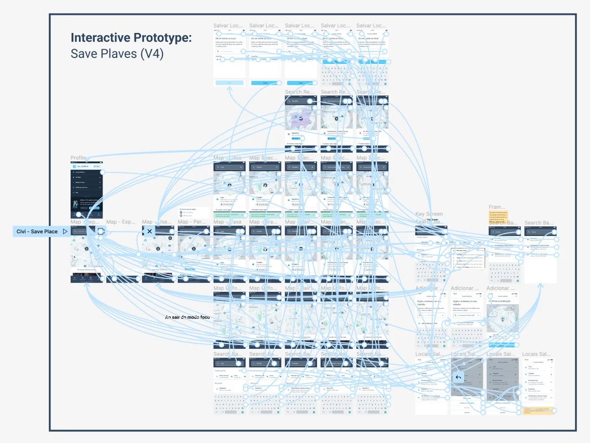
Breaking the feature into smaller versions
I broke this feature into four smaller versions, which let us launch faster and validate with users throughout implementation.
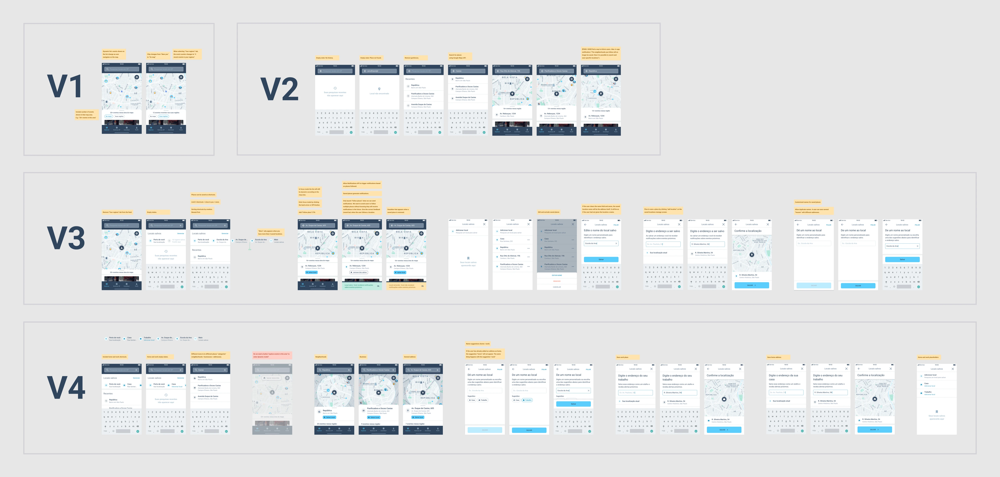
"Save places" final version
After a few rounds of improvements, I landed on the version below.
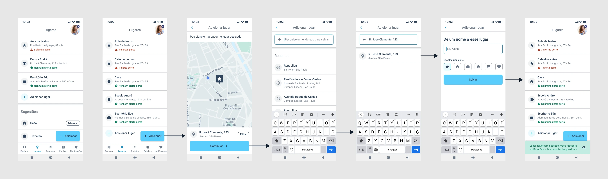
Onboarding redesign (2022)
Problem
Onboarding was one of the app's most elaborate flows, with a high drop-off rate — largely because it asked for a lot of personal information upfront: home address, work address, device location, and more.
Solution
Together with another designer, we redesigned the onboarding flow to strike a better balance — collecting what we needed while keeping it short and easy to get through.
Pending permissions and settings (2022)
Problem
Civi's value depended heavily on device permissions — location access, notifications, saved places, and contacts.
Many users were finishing onboarding without turning these on, so the app couldn't deliver its full value, and retention suffered.
Solution
To fix this, I designed a pending-settings carousel and a settings review flow that explained why each permission mattered and how it kept users safer.
Virtual contact "Civiana" (2023)
Problem
Civi also depended on users adding contacts — friends and family who could see each other's location, get nearby alerts, and receive automatic notifications when someone arrived at or left a saved place. However, data showed a low rate of sent invitations, and an even lower rate of accepted ones.
In user interviews, I found that many people rushed through onboarding without reading the explanations — they wanted to finish registering as fast as possible to start exploring the app and learn how to use it by using it. Without understanding the possibilities of the app they had no motivation to invite anyone to join.
Solution
To solve this, I created Civiana — a virtual contact that shows users what an added contact looks like in the app, complete with location, distance, battery level, and nearby occurrences. I gave her a home and work address too, to demonstrate the auto-check-in feature.
This way, users could see the value of adding contacts firsthand. Contact invitations went up significantly as a result.
Places suggestions (2023)
Problem
I built an auto-check-in and auto-check-out function that notifies users when a contact arrives at or leaves a saved place — for example, "Mary arrived at home" or "John left work." The problem: users were adding contacts but not places for them — someone might add a partner but never that partner's office, leaving the feature unusable for that place.
Solution
I added a list of suggested places, pulled from the places a user's contacts had already saved. It became much easier for users to add these places and use the auto check-in feature.
Event icons redesign (2022)
Problem
Initially, each of the app's 80+ event types had its own detailed icon. In testing, I found that most users couldn't tell them apart — they were too small on the map to read at a glance.
Color was a problem too: the app used blue, gray, yellow, and red backgrounds to show how recent an event was, but since the icons were colorful as well, it was hard to tell what the background color meant. Instead of helping, the icons made the map visually noisy and confusing.
Goals
- Simplify the event icons, making them more intuitive and accessible.
- Make the pins on the map clear and easy to understand.
- Create event type categories to allow the implementation of simple map filters by event type.
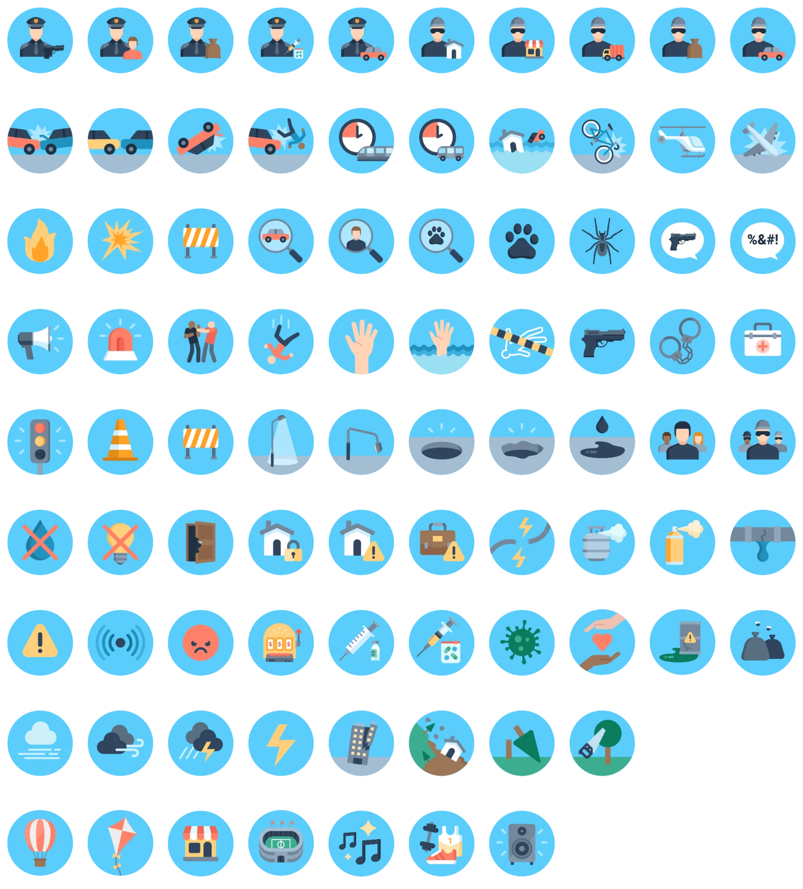
Process
I used card sorting to organize the event types into categories that would feel intuitive to users.
Participants sort a set of cards into groups based on how they relate — it's a simple way to learn how people naturally categorize information, so the product's structure matches how they actually think.
Dynamic instructions
The participants were asked to do the following:
- Read the post-its one by one.
- Organize them into groups that make sense to you, by dragging the cards to the columns on the side. There's no right or wrong — follow your intuition.
- You can move cards between categories if you change your mind during the process.
- Use as many categories as you like — you don't need to fill every column. Duplicate the last one if needed. Colors are for visual clarity only.
- Name each category as it makes sense to you.
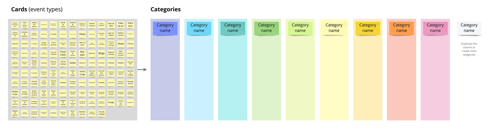
Gathering and analysing results
I collected all the results into one big matrix, then looked for patterns across categories.
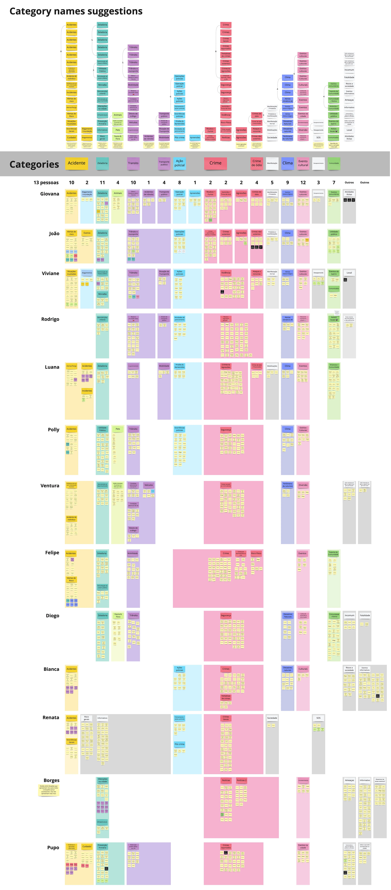
Card sorting result
The analysis led me to 19 event categories, and I designed a monochromatic icon for each one.
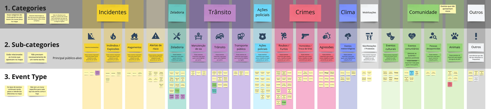
Testing new icons with users
I applied the new icons to a map simulation, then asked a few people what they thought each one meant, without giving them any context.
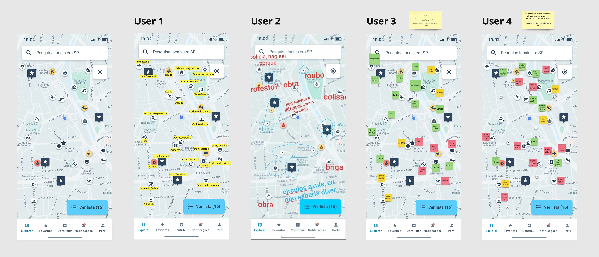
Icons Final Design
This is the result of the new event categories and their icons.
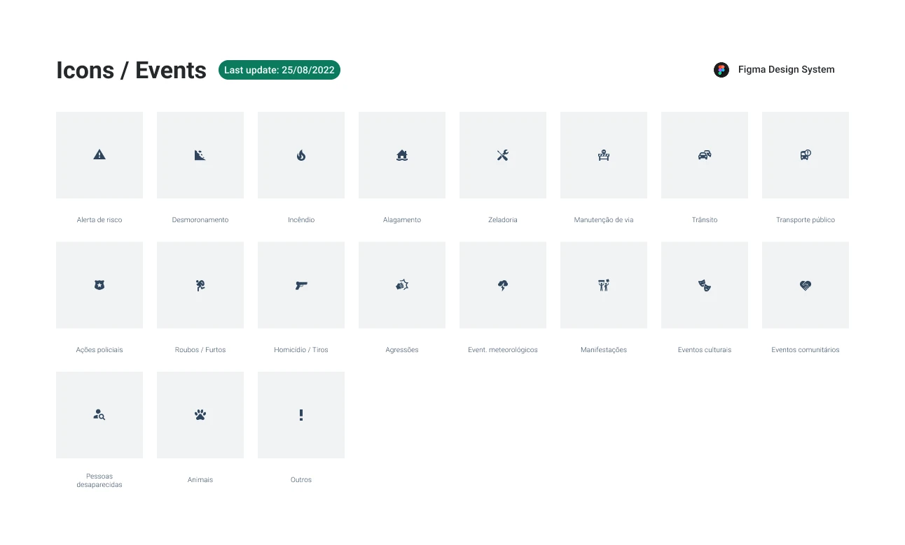
Event density
Problem
As all the pins on the map had these new icons, the map was still looking very dense in information. It was difficult to decide which pin to click first.
Besides that, back in the Save Places interviews, many users had asked for an event type filter to see only the event types relevant to them on the map.
We didn't have a very big quantity of event submitions everywhere in the city. Filtering by event type would likely leave the map looking empty in areas without much activity.
Besides that many users would forget about this filter and they would never see lots of possibly relevant information.
Solution
To get around this, we designed an event relevance score instead of a simple filter.
We set a maximum number of pins that would appear expanded with icon on the map, the rest appeared as a smaller dot — just enough to suggest something had happened there.
Each event got a score based on recency, gravity, and distance — gravity being a 1–10 rating we assigned to each event type by severity.
The map showed the highest-scoring events larger and more prominently. By zooming in the users could see more local, lower-priority events as the view area shrank.
Event submission flow (2022)
Improving how users submit event reports — Civi's user-generated content (UGC) flow.
Problem
Before this, Civi directed users to a WhatsApp channel to report events, where the team would validate and publish them in the app. Sending people outside the app made the whole process feel unreliable — few users actually reported anything, and what we did get was often incomplete, with no photos or video to verify it.
Goal
My goal was to create an easy in-app flow for users to submit event details — clear enough for Civi's team to validate quickly before publishing.
Benchmark research
To understand how other apps handled event reporting, I ran a competitive audit of direct competitors like So Safe and SP + Segura. Since their UX wasn't great either, I also looked at indirect competitors — Waze, Instagram, WhatsApp, TikTok, Facebook, and Airbnb — for inspiration.
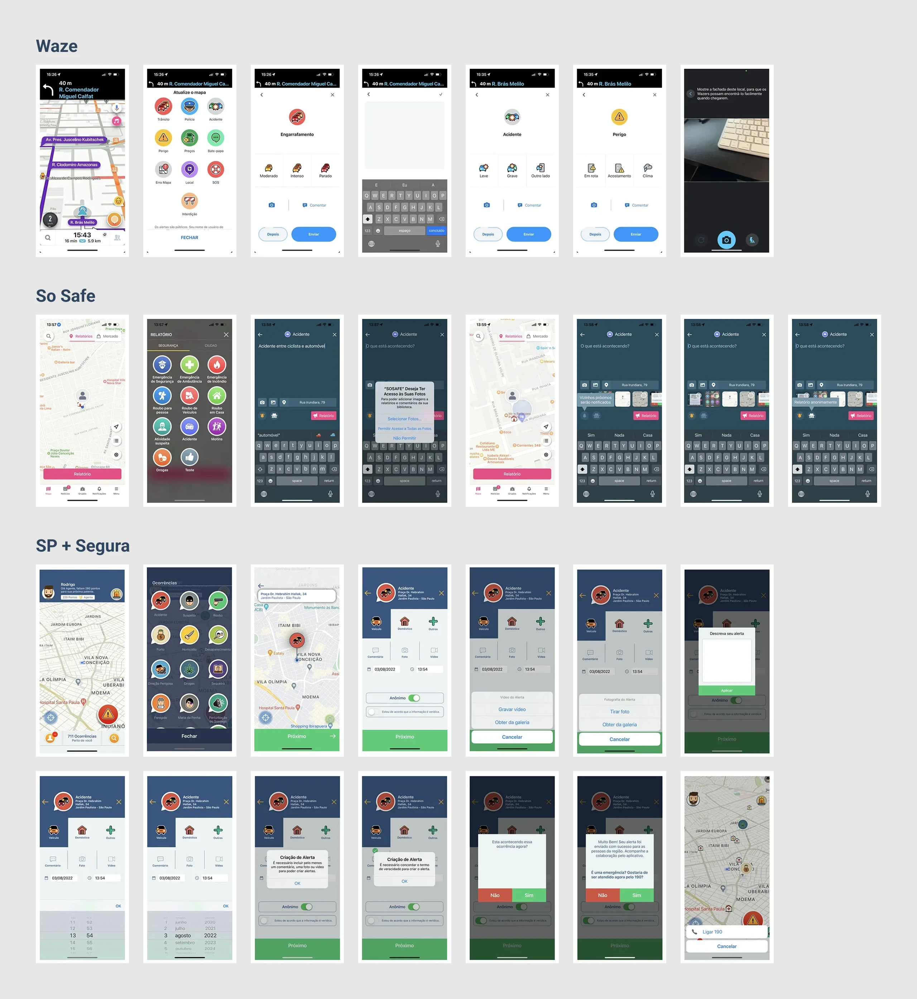
UGC first version
I built a first version of the flow, but after launch, submissions actually dropped further. Firebase event data showed users were mostly dropping off at the upload-media step.
User interviews
To dig into why, I interviewed users who'd completed the flow successfully, to understand their experience and the real-life scenarios worth designing for. I also interviewed users who'd dropped off, to find out why and get their feedback.
New flow advantages
Based on what I heard in those interviews, I made several changes to the flow. Here's how the new version compares to the old one:
Simplicity and speed
The old flow had 7 steps; the new one has 3. Sending anonymously, picking a date/time, and writing a description are now all on one screen.
Location tracking
The new flow detects the user's current location automatically and shows it on a map, so there's no need to type an address — helpful for reporting something witnessed on the street without knowing the exact address.
Audio recording
Users can record audio to describe what happened instead of typing it out.
More intuitive flow
Some users didn't realize they could report events through the app at all, so the first step now shows every available event type upfront.
Details of the UGC flow (first and final versions)
The end of Civi (2023)
Around June 2023, Civi's founders shared that they hadn't been able to raise a new round of investment, and the newly launched premium plan wasn't generating enough revenue to keep the company running. Shortly after, they decided to close it down.
Looking back, a few things stand out to me:
Lack of user data from the start
It took us a long time to collect and present usage data clearly. For more than a year, I had no visibility into new users, retention, or heat maps — which made it hard to know where the real problems were.
Discovery took priority over shipping basics
I spent a lot of time on research and elaborate features before the basic experience was solid. The onboarding flow, for example, stayed buggy and visually inconsistent for too long — and that alone pushed away plenty of new users before they'd even tried the app.
Acquisition outpaced retention
We invested heavily in acquiring new users while retention was still low, so a lot of that spend went toward users who left the app almost as fast as they joined.
Monetization came too late
We wanted to build a large, popular app before introducing a paid plan. By the time Civi Protege launched, it was too late to change the company's trajectory.
This experience taught me to weigh business fundamentals — monetization, retention, team pacing — as closely as I weigh usability and visual consistency. It's a lesson I carry into every project since.